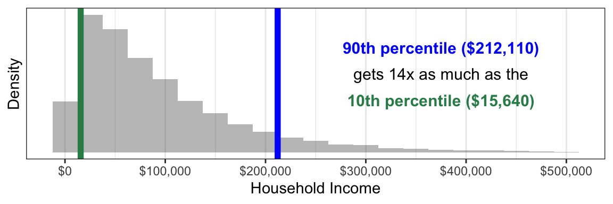

Distributions and Summaries
Topic for 1/7.
Data science questions often involve many units, each of whom may have a unique value of the outcome variable. How do we summarize all of these outcome values? This page focuses on two approaches: visualizing the distribution and producing one or more summary statistics.
As an example, below we study household income (an outcome) which is defined for each household (a unit of analysis) among all U.S. households in 2022 (a target population).
Visualizing the distribution
Not all households have the same income: there is a distribution of incomes across households. One way to study a distribution is by visualizing it with a histogram.
To produce this graph, we first downloaded survey data on annual household income from the 2022 Current Population Survey. The histogram categorizes households into discrete income groups that are each $25,000 wide. The height of each bar corresponds to the number of households falling in that income group. We can see that the most common household income values are below $100,000, but a small number of households have very high incomes that create a long upper tail at the right.
The simulated dataset incomeSimulated.csv available on the course website will enable you to produce a similar graph.
The code below will produce a basic version of this graph. First, you will need to prepare your environment by loading packages.
library(tidyverse) # for manipulating data
library(scales) # for labeling graphs easilyThen, you can load the data from the course website.
incomeSimulated <- read_csv("https://soc114.github.io/data/incomeSimulated.csv")The code below produces the graph.
incomeSimulated |>
ggplot(mapping = aes(x = hhincome)) +
geom_histogram(binwidth = 25e3) +
scale_x_continuous(
name = "Household Income",
labels = label_currency()
)
This code starts with the dataset incomeSimulated and uses the pipe operator |> to pass the dataset into the plot. The ggplot() line creates the plot. The mapping argument defines the aethetics (aes) of the plot, with the hhincome variable being assigned to the x-axis. The geom_histogram line produces the plot. The scale_x_continuous() lines are an optional part to improve readability of the x-axis.
The summary statistic
We often want to take a distribution and convert it to a summary statistic: a one-number parameter that summarizes a fact about the distribution. A summary statistic collapses the entire distribution down to a single number.
One summary statistic is the median: the value at which 50% of households have higher incomes and 50% of households have lower incomes.

You can produce the median using the simulated data incomeSimulated.csv with the code below.
incomeSimulated |>
summarize(estimated_median = median(hhincome))# A tibble: 1 × 1
estimated_median
<dbl>
1 68146.This code starts with the incomeSimulated data and uses the pipe operator |> to pass the data to the summarize() function. The summarize function creates a new variable estimated_median which contains the median value of hhincome, calculated by applying the median() function to this variable. The median() function takes a vector of values and returns a single summary. The summarize() function converts our data that had 1000 rows into a new format that has only 1 row containing the summary statistic.
One can also produce several summary statistics. The median is a useful measure of central tendency: it gives a sense of the income value in the middle of the distribution. But it may not give us a good sense of inequality, which requires some sense of the spread of the distribution. One may therefore want other summary statistics, such as the 90th and 10th percentiles. The 90th percentile is the household income value such that 90% of households have lower incomes. The 10th percentile is the value such that 10% of households have lower incomes.

Below, we produce these summaries in the simulated data. Note that the summarize() function can produce several new variables containing several estimated summary statistics. Here we use the quantile function to produce the percentile estimates.
incomeSimulated |>
summarize(
estimated_median = median(x = hhincome),
estimated_10th_percentile = quantile(x = hhincome, probs = .1),
estimated_90th_percentile = quantile(x = hhincome, probs = .9)
)# A tibble: 1 × 3
estimated_median estimated_10th_percentile estimated_90th_percentile
<dbl> <dbl> <dbl>
1 68146. 17480. 219228.How to choose a summary statistic?
The choice of summary statistic involves a subjective (non-empirical) choice about what aspect of the distribution is important to report. If you are normatively concerned with the growth of high incomes, you might want to summarize the 90th or even 99th percentile of the distribution. If you are concerned with the typical household, you might want to summarize by the median. If you are interested in patterns of inequality among low earners, you might summarize with the 10th percentile.
–>
–>
–>
–>
–>
–>
–>
–>
–>
–>
–>
–>
–>